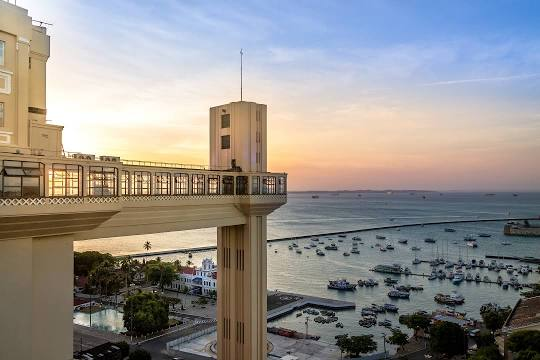
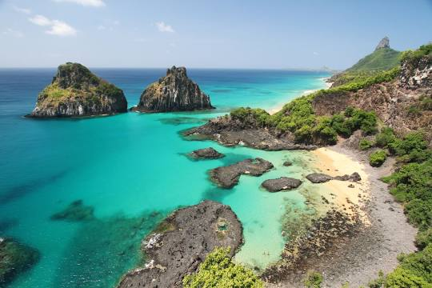
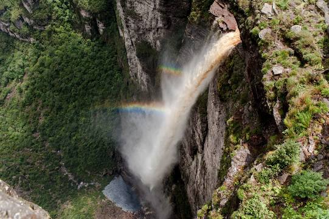

Elevador Lacerda
O Elevador Lacerda é um sistema de transporte público da cidade de Salvador, capital do estado brasileiro da Bahia. Trata-se do primeiro elevador urbano do mundo. Em 8 de dezembro de 1873, quando a primeira torre foi inaugurada, era o elevador mais alto do mundo, com 63 metros.
Baia dos Porcos
A Baía dos Porcos é uma baía brasileira localizada na ilha de Fernando de Noronha, pertencente ao estado de Pernambuco. A praia da Baía dos Porcos tem apenas 100 metros de extensão. Em 2013 e 2014 o Guia Quatro Rodas elegeu a Baía dos Porcos a praia mais bonita do litoral brasileiro.
cachoeira da Fumaça
A cachoeira da Fumaça é uma cachoeira brasileira localizada no município de Palmeiras, no estado da Bahia. A queda d'água está incrustada na Chapada Diamantina, dentro do conhecido Parque Nacional da Chapada Diamantina e possui 380 metros de altura, sendo a maior do Brasil, após medição realizada em 2018.